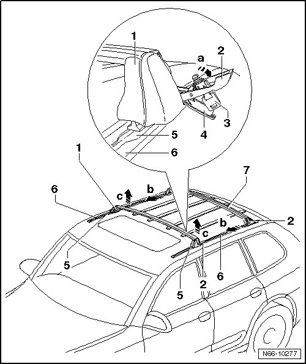
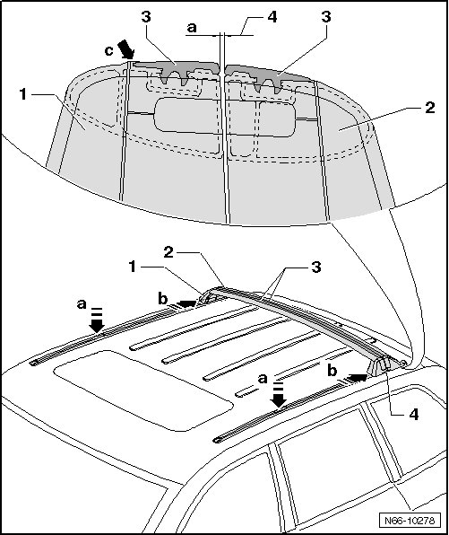

Roof Luggage Carrier Bars
eRoof Luggage Carrier
Roof Luggage Carrier Bars
• Removal is described for the front roof luggage carrier bar. Removal of the rear roof luggage carrier bar is performed in the same manner.
Removing

- Open lock cover - 4 -.
- Using the key, release lock - 3 - on roof luggage carrier bar on left and right-hand sides.
- Open lever on roof bar - 2 - in - direction of arrow a -.
- Slide front roof rack bar parallel - 1 - into opening - 5 - of guide rail - 6 - - b arrows - and remove upward - c arrows -.
- Rear roof rack bar - 7 - is removed as front one is.
Installing

- Place roof rack bars - 1 and 2 - with released locks - 4 - one after another into guide rails - a arrows - and slide roof rack parallel back - b arrows - into "park position".
- The flat side - arrow c - of the cover strips - 3 - should be aligned toward front on the front roof rack bar - 1 - and toward back on the rear roof rack bar - 2 -.
Distance - dimension a - or roof rack bars to each other should be "5 mm".